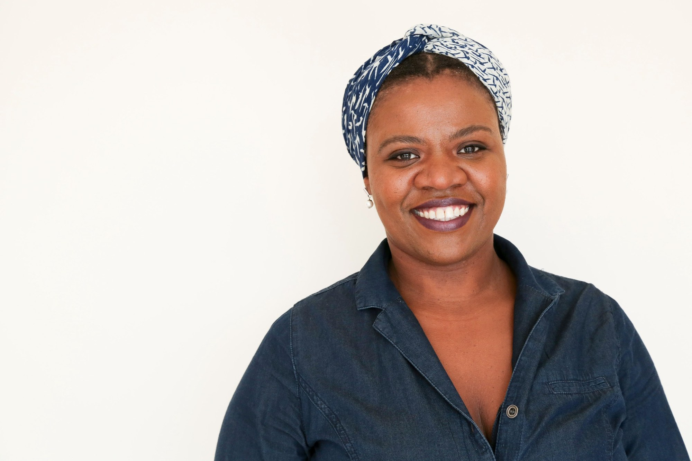

Imperial College London
Estágio acadêmico na área de Física Atmosférica.
Professora de Física · Pesquisadora · Educadora
Pesquisa, ensino e produção de conhecimento para uma ciência mais plural, crítica e comprometida com a transformação social.
Universidade Federal da Bahia · Instituto de Física

Explore
Pesquisa, formação, produção acadêmica e iniciativas que atravessam ciência e sociedade.
Ensino de Física, relações étnico-raciais, gênero, diversidade e perspectivas decoloniais.
Conheça as pesquisas → 02Artigos, livros, capítulos e trabalhos sobre educação científica e produção de conhecimento.
Consulte publicações → 03Conferências, cursos, minicursos e oficinas para diferentes contextos educacionais.
Veja as atividades →Sobre
Katemari Rosa é professora de Física na Universidade Federal da Bahia (UFBA), onde atua no Instituto de Física.
Sua trajetória articula pesquisa em ensino de Física e educação científica com estudos sobre raça, gênero, sexualidade, diversidade, equidade e perspectivas decoloniais. Seu trabalho investiga como as relações sociais e históricas atravessam a produção do conhecimento científico, a formação docente e o ensino de ciências.
É líder do grupo de pesquisa DICCINA — Diversidade e Criticalidade nas Ciências Naturais.
Percorra a trajetória →Percurso
Uma trajetória construída entre pesquisa, formação, ensino e iniciativas coletivas.
Estágio acadêmico na área de Física Atmosférica.
Pesquisa em História e Filosofia da Ciência na formação de docentes de Física.
Doutorado em Educação em Ciências, com pesquisa sobre gênero, raça e educação em Física.
Iniciativa dedicada a registrar e divulgar trajetórias de pessoas negras nas ciências, tecnologias e engenharias.
Organização do I Encontro de professoras, professores e estudantes negras e negros na Física.
Publicação do Resource Letter sobre raça e Física no American Journal of Physics.
Reconhecimento como Forum on Education Fellow.
Linha do tempo inicial; datas, descrições e links serão revisados e ampliados na próxima atualização.
Pesquisa
Investigações e práticas que conectam a educação científica às questões sociais, culturais e políticas da produção do conhecimento.
Produção acadêmica
Uma seleção inicial. A bibliografia completa será organizada por tipo, tema, ano e acesso.
A Física na Escola.
Nature Physics.
American Journal of Physics.
Physical Review Physics Education Research.
Teachers College, Columbia University.
Universidade Federal da Bahia.
Os registros bibliográficos e links serão conferidos antes da inclusão da lista completa.
Convites e formação
Atividades para universidades, escolas, eventos científicos, redes de ensino e organizações.
Discussões sobre a construção social da ciência, relações raciais e justiça na produção do conhecimento.
Trajetórias, experiências, estratégias de permanência e transformação das instituições científicas.
Introdução aos estudos feministas e de gênero e suas implicações para a educação científica.
Análise de livros didáticos e materiais de ensino a partir de perspectivas críticas.
Reflexões sobre conhecimento, colonialidade e possibilidades de transformação da educação científica.
História da área, linhas de investigação e leitura crítica da produção acadêmica.
Entre em contato para consultar formatos, disponibilidade, duração e condições da atividade.
Informações profissionais
Um espaço para organizar solicitações profissionais, facilitar convites e compartilhar informações e materiais de divulgação.
Para consultar disponibilidade e propor palestras, conferências, cursos, minicursos ou oficinas, envie um e-mail com o tema, a data, o formato, a instituição organizadora e uma breve descrição da atividade.
Enviar convite →Para reuniões iniciais, conversas sobre pesquisa, parcerias e colaborações, utilize o agendador. A solicitação de horário é uma pré-reserva e depende de confirmação por e-mail.
Agende um horárioJornalistas, produtoras e equipes de comunicação podem solicitar entrevistas, informações biográficas, fotografias e dados institucionais por e-mail.
Fazer uma solicitação →As biografias e fotografias oficiais serão disponibilizadas nesta página para uso em programas de eventos, formulários, materiais institucionais e divulgação de atividades.
Solicitar material →Agenda profissional
A agenda pública reúne compromissos acadêmicos e profissionais, como aulas, palestras, eventos, reuniões e outras atividades. Ela não substitui o agendador de reuniões.
Abrir agenda em outra janela →Vídeos e participações
Uma seleção de registros audiovisuais de palestras, entrevistas, participações em eventos e conteúdos sobre minha trajetória e atuação.
Acessar playlist no YouTube →Para programas e apresentações
As versões curta, média e longa da biografia serão disponibilizadas para cópia e utilização em programas de eventos, apresentações, formulários e materiais de divulgação.
Para informações específicas ou materiais adicionais, escreva para katemari@ufba.br.
Curadoria
Materiais selecionados para apoiar estudos, pesquisas, práticas docentes e debates públicos.
Pesquisa, formação docente, currículo e práticas de ensino.
Teoria Crítica da Raça, relações étnico-raciais e ciência.
Estudos feministas, gênero e produção do conhecimento.
Epistemologias, colonialidade e educação.
Experiências e trajetórias de grupos historicamente excluídos.
Modelagem 3D, fabricação digital e educação científica.
A biblioteca temática está em organização. Novas referências e materiais serão adicionados progressivamente.
Entrevistas, vídeos e imprensa
Conversas, entrevistas, palestras gravadas e participações em veículos de comunicação.
TEDxBeloHorizonte.
CECIERJ, 2025.
Entrevista sobre trajetória, gênero e ciência.
Ciência Hoje.
Links para vídeos, entrevistas e matérias serão adicionados após conferência dos endereços.
Contato profissional
Para convites de palestras, cursos e oficinas, entrevistas, parcerias acadêmicas ou outros assuntos profissionais, utilize o contato abaixo.
Para convites, entrevistas, parcerias e assuntos profissionais.
Instituto de Física
Universidade Federal da Bahia (UFBA)